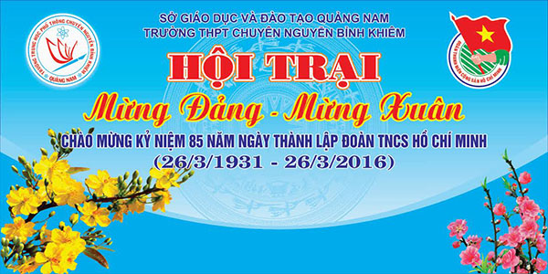
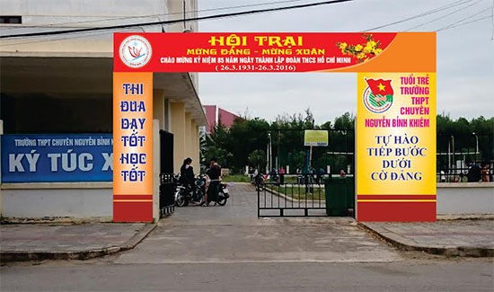
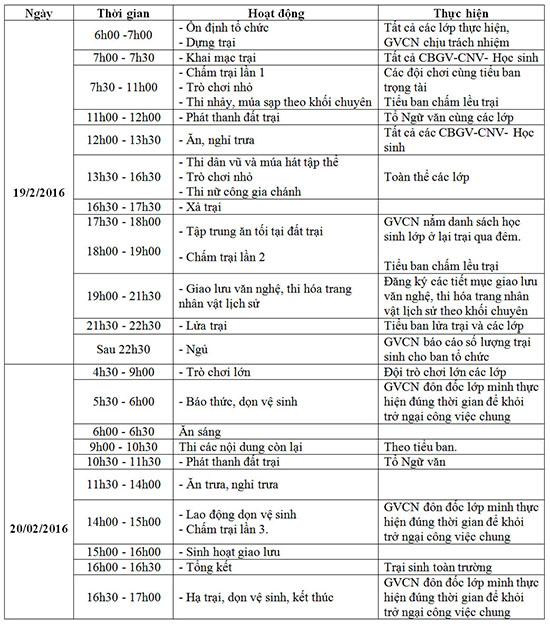
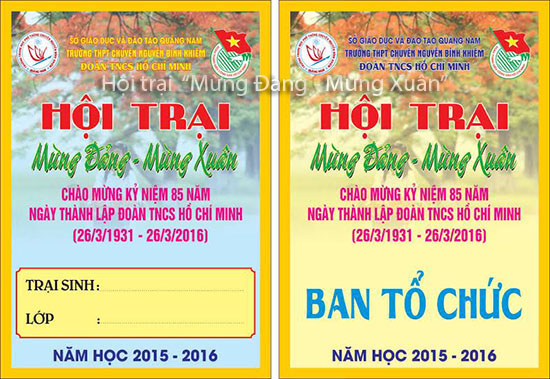

Hội trại Mừng Đảng - Mừng Xuân

Lần cập nhật cuối lúc Thứ tư, 06 Tháng 4 2016 10:23 Viết bởi Administrator Thứ ba, 16 Tháng 2 2016 14:51
Hướng tới kỷ niệm 85 năm ngày thành lập Đoàn TNCS Hồ Chí Minh (26/3/1931 – 26/3/2016), kỷ niệm 86 năm ngày thành lập Đảng CSVN (3/2/1930 – 3/2/2016) và mừng Xuân Bính Thân nhà trường tổ chức Hội trại "Mừng Đảng - Mừng Xuân".

- Nhằm tuyên truyền giáo dục cho học sinh về vai trò lãnh đạo của Đảng trong thời kỳ mới; thực hiện có hiệu quả cuộc vận động "Học tập và làm theo tấm gương đạo đức Hồ Chí Minh". Từ đó, học sinh tiếp tục rèn luyện, cống hiến và xác định trách nhiệm của tuổi trẻ trong công cuộc xây dựng và bảo vệ Tổ quốc Việt Nam xã hội chủ nghĩa.
- Tạo điều kiện cho học sinh có sân chơi lành mạnh, vui khỏe, giao lưu học tập kinh nghiệm lẫn nhau.
- Giúp cho học sinh môi trường hoạt động ngoại khóa, giáo dục kỹ năng sống, nhằm tạo cho tập thể và cá nhân biết xây dựng kế hoạch, tổ chức thực hiện có hiệu quả các hoạt động, đảm bảo đúng yêu cầu của nhà trường đề ra, với chủ đề: "Mừng Đảng- Mừng Xuân".

CHƯƠNG TRÌNH SINH HOẠT TRẠI
- Thời gian: 2 ngày (từ 6 giờ ngày 19 tháng 2 đến 16 giờ ngày 20 tháng 2 năm 2016)
- Địa điểm: Trường THPT chuyên Nguyễn Bỉnh Khiêm
- Yêu cầu: Tất cả CBGV- CNV, học sinh đều tham gia.

Ban tổ chức trân trọng kính mời quý vị phụ huynh và cựu học sinh đến tham dự. Trân trọng cảm ơn.

- 05/04/2016 10:22 - Văn bản hợp nhất TT 02-2015 và 02-2016 Thông tin v…
- 29/03/2016 10:09 - Thông tin tuyển sinh đại học - cao đẳng hệ chính q…
- 23/03/2016 14:13 - Hướng dẫn tuyển thẳng - ưu tiên xét tuyển vào đại …
- 23/03/2016 14:03 - Thông tư số 03-2016-TT-BGDĐT về việc sửa đổi bổ su…
- 17/03/2016 14:03 - Hướng dẫn tổ chức công tác tuyển sinh ĐH-CĐ hệ chí…
- 27/11/2015 08:34 - Từ Huyền thoại Everest đến Học trò xứ Quảng
- 25/11/2015 09:42 - Lễ ra mắt game show Học trò xứ Quảng
- 05/11/2015 16:30 - Triển khai tham gia cuộc thi tìm hiểu lịch sử văn …
- 04/11/2015 10:05 - Danh sách học sinh được tham gia bồi dưỡng thi HSG…
- 29/08/2015 08:55 - Thầy và trò trường THPT chuyên Nguyễn Bỉnh Khiêm c…